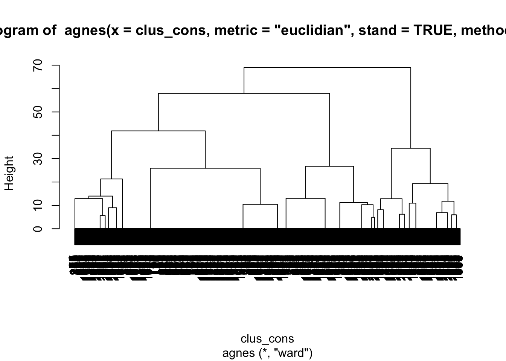
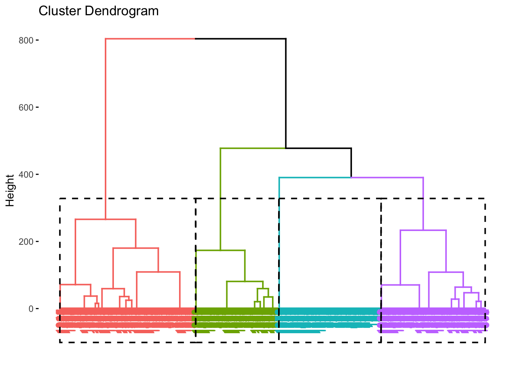
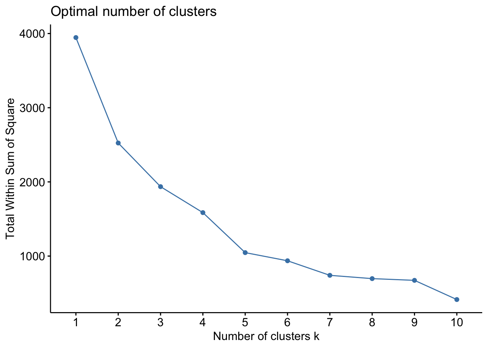
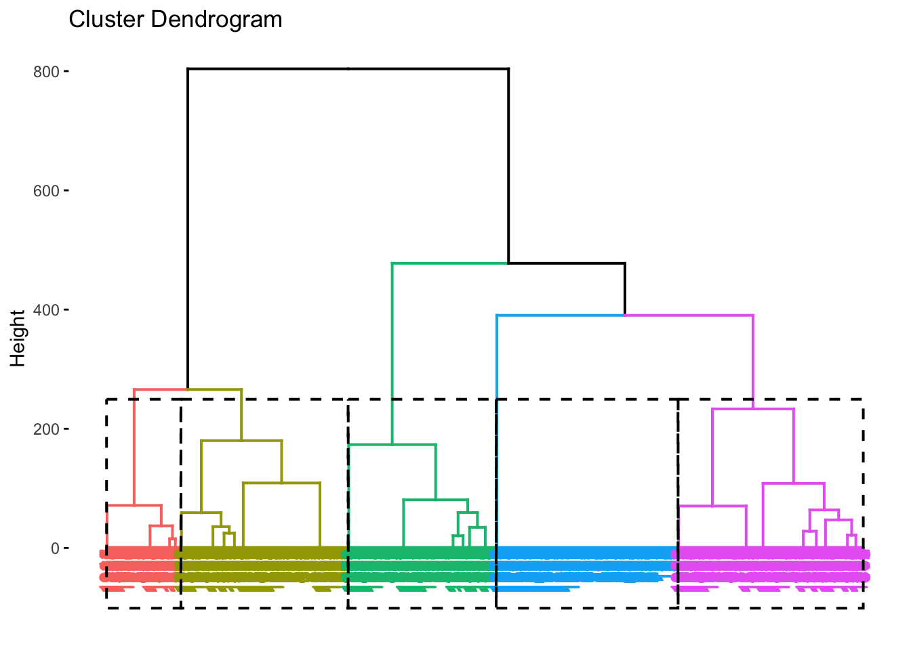
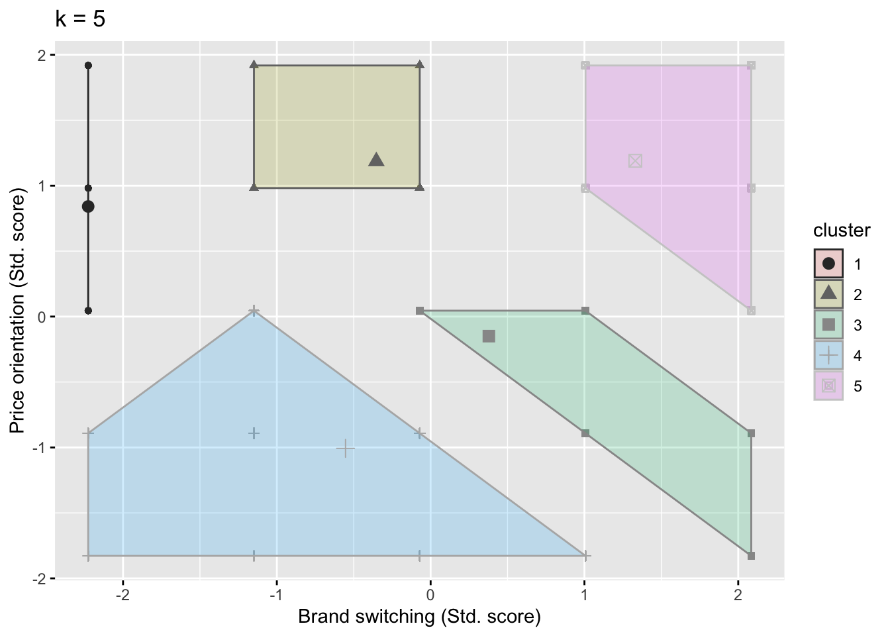
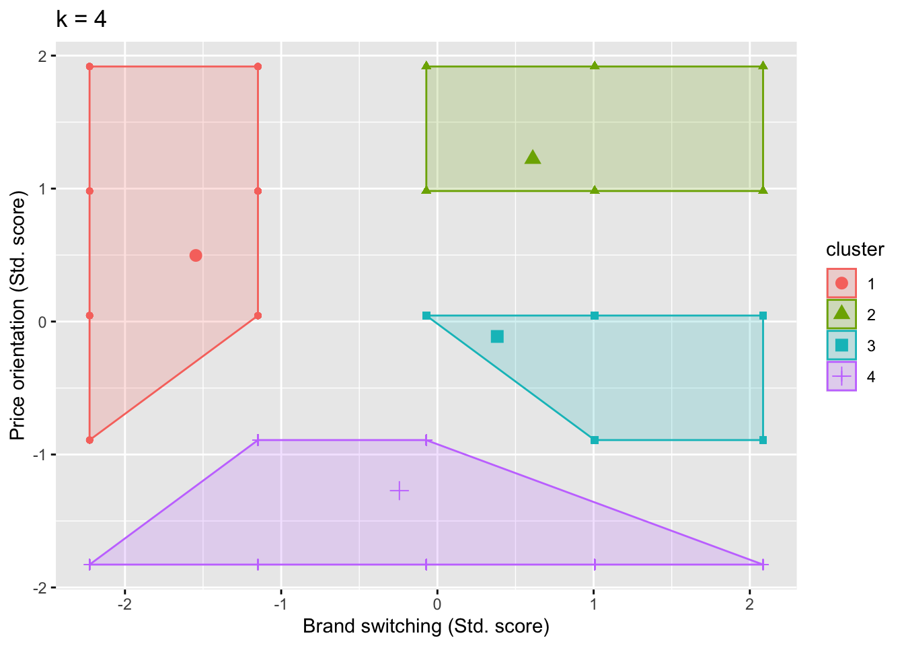

8.4 Rによるクラスター分析の実行
ここからは、Rを用いたクラスター分析の実行方法について紹介する。なお、本節では、吉田秀雄記念事業財団によって2023年に実施された消費者調査アンケートデータ、https://www.yhmf.jp/aid/data/data_aid_2023_later.html のうち、（簡単化のために）特定の変数と回答者（兵庫と東京在住者のみ）を抽出して利用する21。ここでは、以下のリストにある変数を活用する。
- q12_4（ブランドロイヤリティ性向）：「たとえ多くのブランドを利用できる状況にあっても、何時も同じブランドを選ぶ。」
- q13_3（価格感度）：「大抵、一番安いものを買う。」
- 性別
- 年齢
- 結婚有無
- q5: 職業
- q7_2: 世帯年収
なお、q12_4とq13_3はどちらも5点リッカート尺度で回答を得ている。ただし、本データではとても当てはまる場合には 1 を、全く当てはまらない場合には5 を取る尺度になっているため、当てはまりの程度が高いほど高い 値をとるように調整する必要がある。その他消費者属性情報の回答項目の詳細はエクセルファイルを参照してほしい。上記の条件に沿うデータは以下のように抽出することができ、その結果、1973件の回答を得た。
df_cons <- readxl::read_xlsx("data/回答データ【消費者調査2023年度下期調査】.xlsx", sheet = "回答データ【共通調査2023年度下期】",na = " ")
library(tidyverse)
#東京と兵庫の県番号リスト作成
list <- c(13, 28)
#回答者と項目を抽出
df_cons <- df_cons %>%
select(県番号, q12_4, q13_3, 性別, 年齢, 結婚有無, q5, q7_2) %>%
filter(県番号 %in% list,
q12_4 != 999,
q13_3 != 999) %>%
mutate(q12_4 = 6 - q12_4,
q13_3 = 6 - q13_3,
Pref = ifelse(県番号 == 13, "Tokyo", "Hyogo"),
Gender = case_when(性別 == 1 ~ "Male",
性別 == 2 ~ "Female",
TRUE ~ "Others"),
MaritalSt. = case_when(結婚有無 == 1 ~ "Married",
結婚有無 == 2 ~ "Not Married",
TRUE ~ "Others"))本節でのクラスター分析の実行にあたっては、以下のパッケージをインストールし利用する。なお、クラスター分析自体は cluster パッケージで実行可能だが、factoextra を用いるともう少し洗練された可視化が可能になるため、こちらの紹介も行う。
install.packages(c("cluster", "factoextra","ggrepel", "useful"))
library(cluster)
library(factoextra)
library(ggrepel)
library(useful)本節で我々はdf_consを用いて分析を行いたいのだが、クラスタリングの関数はデータセットに含まれているすべての変量間の類似性・相関を計算してしまうため、必要な変数のみを抽出し、分析に利用する。なお、クラスタリングの関数は文字列にも対応していないため、もしデータセットにそのような変数が含まれている場合には、この段階で取り除く必要がある。
ここではブランドスイッチ（q12_4）と価格志向（q13_3）に関する変数の抽出と、クラスター分析の実行を行うために、以下の手順を経る：
- 階層的クラスター分析を実行し、デンドログラムを確認
- デンドログラムとエルボー法によりクラスター数を決定
- 2.で決定したクラスター数に従い、K-means法を実行
- クラスター情報と元データ（df_cons）を結合し、プロファイル情報の整理と検討
まずは以下の通り、階層的クラスター分析を実行する。なお、階層的クラスター分析の実行においては、agnes() 関数を用いる。その際に用いる距離の計測方法は metric = という引数で設定できる。その後、階層的クラスター分析の結果を用いて pltree() 関数を実行することで、デンドログラムが出力される。
clus_cons <- df_cons %>%
select(q12_4, q13_3)
Hier1 <- agnes(clus_cons, metric = "euclidian", method = "ward", stand = TRUE)
pltree(Hier1)
Figure 8.9: 消費者デンドログラム
図8.9 の通り、本データは1973件の観測個体を有するため、デンドログラムも下部については識別が難しくなっている。しかしながら、例えば高さを40ぐらいに設定した場合、クラスターは4つか5つに分かれることがうかがえる。例えば4クラスターの場合、どのような分け方になるかについて、直感的に示すために、factoextra パッケージを用いると図8.10のようにデンドログラムを出力できる。この時、fviz_dend() 関数における k = 4 という引数で、ここでのクラスター数を定義している。
alt_Hier <- clus_cons %>%
dist("euclidian") %>%
hclust("ward.D")
alt_Hier %>%
fviz_dend(k = 4, rect = TRUE,
rect_border = TRUE) 
Figure 8.10: 4クラスターデンドログラム
続いて、上記の結果を踏まえ、エルボー法を実施する。

Figure 8.11: エルボー法結果
図 8.11 を確認すると、4もしくは5クラスターで傾きが小さくなっているように見える。ちなみに、5クラスターを採用したケースは、デンドログラムでは図8.12のように示すことができる。

Figure 8.12: 5クラスターデンドログラム
4クラスターモデルと5クラスターモデルのどちらがいいのかについての判断は難しいが、ここでは便宜的に5つのクラスターを仮定する。K-means法の実施には、clusterパッケージの kmeans()関数を用いる。なお、初期クラスターセンターの割り振りはランダムで行うため、set.seed() を用いる。以下では、5つのクラスターを仮定した分析結果を出力する。なお、紙幅の関係から clustering vector に関する結果は省略している。
## K-means clustering with 5 clusters of sizes 80, 298, 760, 592, 243
##
## Cluster means:
## q12_4 q13_3
## 1 1.000000 3.850000
## 2 2.738255 4.218121
## 3 3.417105 2.792105
## 4 2.552365 1.876689
## 5 4.300412 4.222222
##
## Clustering vector:
## [1] 5 5 5 4 3 3 3 4 2 3 3 1 3 3 3 3 4 3 3 4 2 4 5 3 2 4 3 4 5 4 3 3 3 4 3 4 3
## [38] 4 3 3 4 5 4 3 3 4 3 3 4 2 4 2 2 4 4 2 3 3 3 3 4 3 4 3 2 1 2 1 3 4 3 4 2 4
## [75] 2 3 5 3 4 4 4 3 4 3 2 4 3 2 3 3 3 3 4 2 3 3 3 4 4 3 3 3 4 3 3 3 4 4 3 1 3
## [112] 3 3 3 4 4 3 4 5 4 4 5 3 3 4 3 4 4 4 3 3 3 4 1 2 4 3 2 3 1 4 3 2 4 3 3 4 4
## [149] 3 2 5 2 4 2 3 3 3 4 3 3 4 3 4 4 3 4 4 3 3 4 4 3 2 4 5 3 2 4 3 4 3 3 3 3 3
## [186] 4 3 3 3 3 3 2 4 3 3 2 4 4 4 3 2 3 3 4 4 1 3 3 2 4 3 5 3 3 3 4 4 5 3 2 1 4
## [223] 5 3 5 3 4 4 5 3 4 5 3 4 3 3 4 4 5 3 3 3 5 4 3 4 2 3 2 4 3 4 3 3 4 5 4 2 3
## [260] 3 3 3 5 2 5 4 3 2 3 5 1 4 2 3 4 3 4 3 4 3 2 1 3 3 3 2 3 4 4 2 3 4 3 4 4 3
## [297] 3 3 2 4 3 5 4 2 2 4 4 4 4 5 3 1 3 4 4 4 3 3 5 4 5 4 4 3 2 2 4 4 5 4 3 4 5
## [334] 3 3 4 4 3 3 3 2 1 4 3 4 3 4 3 5 5 2 3 1 2 1 3 3 3 4 2 3 4 4 2 3 3 2 2 3 3
## [371] 4 3 3 3 3 3 3 5 3 3 4 4 3 4 3 2 4 3 4 5 3 2 4 2 3 3 4 3 3 3 3 4 4 4 1 4 3
## [408] 4 3 2 3 3 3 3 3 4 3 1 2 4 2 5 2 3 2 3 2 4 2 3 2 3 4 3 3 3 3 3 2 3 4 3 3 3
## [445] 3 3 3 5 3 3 3 1 3 3 4 4 3 2 3 5 3 4 1 5 4 4 3 2 3 3 4 3 5 4 3 4 4 3 3 4 5
## [482] 4 3 4 2 3 5 4 4 4 3 4 3 4 3 3 4 5 5 3 3 3 5 3 3 1 5 3 4 3 4 5 3 2 2 5 5 3
## [519] 2 3 3 4 2 4 3 3 3 2 5 2 4 5 5 3 3 5 3 4 2 3 3 3 3 3 3 4 4 1 4 3 3 4 2 5 4
## [556] 3 4 3 3 2 5 4 5 3 3 4 5 4 3 2 2 4 4 3 2 4 2 3 2 3 3 2 3 3 3 4 5 3 4 3 3 4
## [593] 2 4 3 3 4 3 4 3 4 3 3 4 3 2 2 3 3 3 2 4 3 4 2 5 5 3 5 3 3 5 3 4 3 1 3 2 3
## [630] 3 5 1 4 3 5 3 2 3 2 4 5 2 3 1 4 4 3 2 4 3 4 3 4 3 2 4 3 4 4 3 4 3 5 4 3 3
## [667] 3 3 3 5 2 3 2 3 4 4 3 5 3 3 4 1 3 4 1 3 5 3 5 4 5 3 3 4 2 3 3 5 2 3 3 3 4
## [704] 3 3 4 3 3 3 3 3 5 4 1 2 3 2 4 2 2 3 5 3 3 3 5 3 4 3 5 3 2 3 4 4 5 4 3 1 3
## [741] 4 3 5 4 3 1 3 3 4 4 3 5 4 3 4 4 4 2 3 4 3 5 3 3 3 4 4 3 1 3 5 2 4 1 2 3 2
## [778] 3 2 3 4 3 5 5 4 3 4 4 3 2 3 3 3 1 3 3 3 3 2 4 4 3 3 2 3 4 4 3 3 4 3 5 4 3
## [815] 4 3 4 1 4 1 4 3 4 5 2 4 2 3 4 3 2 5 4 3 4 4 3 4 2 5 3 2 2 4 3 4 4 4 4 3 5
## [852] 3 2 4 5 4 4 5 2 2 3 1 3 4 5 5 3 2 3 3 5 2 4 3 3 2 4 2 3 1 3 2 2 2 3 2 5 1
## [889] 4 4 5 5 5 4 2 5 2 3 4 1 4 3 5 5 3 2 4 4 4 3 2 2 4 3 3 4 3 3 3 3 3 2 3 2 3
## [926] 5 5 4 3 4 3 4 4 3 1 2 4 5 4 3 5 1 2 4 5 4 4 5 3 3 4 3 4 4 3 4 2 4 2 4 5 4
## [963] 3 2 4 5 4 2 4 2 3 4 3 4 3 2 4 2 3 2 3 4 2 4 2 3 3 3 2 2 4 1 3 4 1 4 3 4 4
## [1000] 3 5 4 2 5 4 5 2 3 3 3 4 3 4 3 3 4 3 3 4 4 2 3 3 5 3 2 5 3 3 3 3 4 3 4 4 5
## [1037] 2 4 3 4 2 3 2 2 4 3 3 3 4 4 2 5 3 3 3 4 3 3 5 4 4 4 2 3 4 5 1 4 3 1 2 5 4
## [1074] 4 3 4 5 4 4 3 4 3 3 4 4 4 3 3 3 4 2 4 2 4 3 2 4 4 3 3 2 3 5 5 4 3 3 5 3 4
## [1111] 2 2 3 4 5 3 4 5 4 4 3 3 3 3 3 3 4 4 3 3 4 4 3 3 4 3 2 4 5 5 5 5 2 4 3 4 3
## [1148] 4 4 2 5 4 3 2 2 3 2 4 3 3 4 4 5 3 2 2 3 4 4 2 4 5 3 5 1 4 3 2 5 3 4 4 3 3
## [1185] 4 1 5 2 4 5 3 3 4 4 3 4 3 5 5 2 3 2 3 4 4 3 2 4 4 3 2 4 3 3 3 2 5 4 1 3 5
## [1222] 4 4 3 3 3 3 4 4 2 3 4 2 5 5 4 5 4 5 2 5 2 5 4 3 3 4 3 5 3 4 4 3 4 4 4 3 3
## [1259] 2 4 2 3 4 4 4 3 4 2 4 2 4 3 4 3 2 2 4 5 5 4 3 3 3 4 4 2 3 3 4 4 3 3 5 1 4
## [1296] 3 4 3 2 3 4 3 3 4 5 3 3 4 3 4 3 2 4 4 3 3 3 5 3 4 3 5 4 4 3 4 3 5 1 4 3 1
## [1333] 2 4 4 5 3 4 4 3 3 3 4 3 3 5 4 3 1 3 3 5 3 3 3 4 2 3 5 3 2 4 3 4 1 3 4 1 5
## [1370] 3 4 3 3 3 4 3 3 5 4 5 4 3 4 2 4 5 2 4 3 3 5 5 3 2 4 5 4 4 3 3 2 3 2 2 3 3
## [1407] 4 4 5 3 4 2 3 2 3 1 2 1 2 3 2 3 3 3 4 4 1 4 2 5 3 5 2 4 4 3 4 4 4 5 3 2 3
## [1444] 1 5 3 4 3 3 3 2 4 3 4 4 3 4 3 2 4 3 4 2 4 3 3 5 4 3 5 4 2 5 4 4 2 3 2 3 3
## [1481] 3 2 5 5 5 4 4 1 3 4 3 4 3 2 5 3 4 3 3 5 1 4 4 4 3 3 3 3 4 3 4 3 4 2 3 3 3
## [1518] 3 5 4 5 5 3 2 4 3 4 4 3 3 4 3 4 3 3 2 4 4 4 5 2 4 4 1 3 3 3 5 3 3 5 3 3 3
## [1555] 3 5 4 3 2 2 4 3 3 2 3 3 3 3 3 4 4 5 5 4 2 4 3 2 3 4 4 3 1 4 2 1 5 4 2 4 3
## [1592] 3 2 3 3 4 5 3 2 2 4 1 3 2 5 3 3 3 2 4 5 5 5 4 3 5 5 4 2 4 3 5 3 1 4 5 3 2
## [1629] 4 5 5 3 2 3 3 4 1 3 5 2 3 3 2 4 3 2 3 2 3 5 3 2 2 5 3 2 4 4 4 3 4 2 4 2 3
## [1666] 2 4 2 5 5 1 3 4 2 3 5 3 3 5 5 3 4 4 2 2 4 2 4 3 4 4 4 3 3 2 2 2 4 5 2 3 3
## [1703] 5 1 3 4 5 2 3 5 5 3 2 2 4 3 3 5 3 4 4 3 3 5 3 4 4 4 3 3 4 4 5 4 4 3 3 3 3
## [1740] 4 3 3 4 2 2 5 3 4 4 2 3 4 4 2 4 3 3 2 3 2 4 2 4 4 4 4 5 2 2 3 4 3 2 4 2 4
## [1777] 4 4 4 4 3 2 4 4 3 4 4 5 4 5 2 2 2 2 3 5 4 5 2 2 1 4 4 2 4 1 3 5 2 4 5 3 1
## [1814] 3 5 4 2 3 3 3 3 2 4 3 5 3 5 3 4 1 5 5 2 3 4 2 5 4 3 5 4 5 3 4 3 4 5 3 4 4
## [1851] 4 3 3 5 1 2 5 3 3 1 2 4 3 4 3 3 4 4 1 5 3 3 3 4 1 2 3 5 5 2 4 3 2 4 4 2 3
## [1888] 2 4 5 4 3 2 3 5 3 1 3 2 3 1 2 3 2 4 3 3 3 3 4 4 3 4 4 3 4 2 4 2 3 3 5 3 4
## [1925] 5 3 4 3 4 4 5 4 1 4 3 3 3 2 2 5 1 4 4 3 3 3 4 4 4 4 2 4 3 4 1 4 5 2 4 3 5
## [1962] 1 3 3 3 4 5 2 3 3 4 3 3
##
## Within cluster sum of squares by cluster:
## [1] 54.2000 108.4060 401.9303 622.3750 127.0700
## (between_SS / total_SS = 66.7 %)
##
## Available components:
##
## [1] "cluster" "centers" "totss" "withinss" "tot.withinss"
## [6] "betweenss" "size" "iter" "ifault"分析の結果表示される Cluster means:では、分析に用いた変数に関する各クラスターごとの平均値が出力される。例えば、クラスター1は、ブランドスイッチ（q12_4）については高いが、価格志向（q13_3）については低いことがうかがえる。結果の下部で表示される、Within cluster sum of squares by cluster:には、各クラスターの内部平方和（分散）が出力されている。その下の between_SS / total_SS は、全体の平方和に占めるクラスター間平方和の比率であり、全体の分散の何%を5つのクラスターが説明しているかを示している。
以下では、上述の結果について、factoextra::fviz_cluster()によって図示化する。図8.13 では、ブランドロイヤリティと価格志向のどちらも高い（低い）グループや、どちらか一方のみ高いグループに加え、価格志向は低いがブランドスイッチについては平均的というグループも確認できた。このように図示化することで、クラスター分析の結果についての解釈が容易になる。なお、4クラスターを採用した場合の結果については、図 8.14で示されている。また、4クラスターでの分析を実行すると、between_SS / total_SS = 65.6 % という結果を得るはずなので、興味のある読者は自身で実行してみてほしい。なお、そのためには4クラスターの仮定でK-means法を実施し直す必要がある。
fviz_cluster(K_shopping, data = clus_cons, geom = "point",
ggtheme = theme_grey()) +
labs(title = "k = 5", x = "Brand switching (Std. score)",
y = "Price orientation (Std. score)") +
scale_color_grey()
Figure 8.13: 消費者価値観クラスター

Figure 8.14: 4クラスターモデル図
続いて、各クラスターに属する消費者についての情報を整理、検討する。ここでは、5クラスターモデルの結果に基づき、クラスター情報と元データとを結合する。結合した結果として以下の表 8.2 に、元データにクラスター番号に関する変数 cluster_id が追加されていることがわかる。
| 県番号 | q12_4 | q13_3 | 性別 | 年齢 | 結婚有無 | q5 | q7_2 | Pref | Gender | MaritalSt. | cluster_id |
|---|---|---|---|---|---|---|---|---|---|---|---|
| 13 | 4 | 4 | 2 | 38 | 2 | 8 | 4 | Tokyo | Female | Not Married | 5 |
| 13 | 4 | 5 | 1 | 42 | 2 | 2 | 9 | Tokyo | Male | Not Married | 5 |
| 13 | 5 | 4 | 1 | 30 | 1 | 3 | NA | Tokyo | Male | Married | 5 |
| 13 | 2 | 1 | 1 | 33 | 1 | 3 | NA | Tokyo | Male | Married | 4 |
| 28 | 3 | 3 | 1 | 25 | 1 | 3 | 10 | Hyogo | Male | Married | 3 |
| 28 | 3 | 3 | 1 | 32 | 1 | 3 | NA | Hyogo | Male | Married | 3 |
以下では、各クラスターの平均的な消費者像について理解するために、個人属性情報をまとめる。その作業方法と結果は、以下のコードと表8.3 のとおりである。ここでは、表8.3に基づき、いくつかのクラスターに絞り、それらの特徴を整理し解釈を行う。なお、本データでは東京在住者の観測数（1465）が兵庫在住者の観測数（508）を大きく上回っているため、居住エリアの比率については元データの比率（\(1465/1973\approx 0.742\)）を基準に、この比率と同等の東京在住者がいれば1を、それより多ければ1より大きい値を取るような比率で示している。
表8.3におけるクラスター１は最も人数が少なく、ロイヤルティ（Loyalty_m）は高く、価格志向（Price_m）はやや低いことがうかがえる。そのため、このグループに属する消費者は、価格に基づいて選んだブランドを買い続けるわけではないかもしれない。クラスター5は、ロイヤルティも価格志向もどちらも低いことがうかがえる。そのため、このクラスターに属する消費者は価格以外の属性に重視していて、自社へのロイヤルティも低い可能性が伺える。また、このクラスターは既婚者率が高く、このような属性の特徴も価値観に影響しているのかもしれない。他のクラスターに関する解釈はここでは割愛するが、ぜひ読者においてもそれぞれのクラスターについての解釈を展開してみてほしい。
clus_summary <- df_cons %>%
group_by(cluster_id) %>%
summarize(N = n(),
Loyalty_m = mean(q12_4),
Price_m = mean(q13_3),
Age_m = mean(年齢),
Male_r = sum(Gender == "Male")/n(),
Tokyo_r = (sum(Pref == "Tokyo")/n())/(1465/1973),
Married_r = sum(MaritalSt. == "Married")/n())
knitr::kable(clus_summary, caption = "クラスターサマリー")| cluster_id | N | Loyalty_m | Price_m | Age_m | Male_r | Tokyo_r | Married_r |
|---|---|---|---|---|---|---|---|
| 1 | 80 | 1.000000 | 3.850000 | 42.61250 | 0.5125000 | 0.8753925 | 0.5250000 |
| 2 | 298 | 2.738255 | 4.218121 | 38.56040 | 0.5134228 | 0.9400188 | 0.6107383 |
| 3 | 760 | 3.417105 | 2.792105 | 41.88816 | 0.5065789 | 1.0100683 | 0.5618421 |
| 4 | 592 | 2.552365 | 1.876689 | 43.79730 | 0.4645270 | 1.0191680 | 0.4712838 |
| 5 | 243 | 4.300412 | 4.222222 | 34.91770 | 0.5102881 | 1.0363938 | 0.6213992 |
本節では、実際の消費者アンケートデータを用いてクラスター分析の実行手順を紹介した。クラスター分析を用いて探索的にセグメントを発見するためには、階層的クラスター分析と非階層的クラスター分析を組み合わせることが重要となる。ただし、クラスター分析ではクラスター数の決定や結果の解釈などにおいて、分析者の恣意性に依存することになる。しかしながら、このような限界も理解した上でうまく利用すれば、有益なセグメントを発見することにもつながりうる。
本節では観測数2000件弱のデータを利用したが、実際に我々がこれだけのデータを目視し、セグメントを発見することは困難である。クラスター分析は人間では処理困難な情報量を集約し、解釈可能にしてくれるという強みを持つ。もちろんもっと多量のデータを用いてクラスター分析を実行することも可能であるし、機械学習への応用や潜在クラスモデルの利用など、より発展的な手法も展開されているため、興味・関心のある学生においてはさらなる学習を進めてほしい。
なお、データの読み込みエラーを防ぐために、自由回答設問項目は削除している。↩︎